la ta'safanna لا تأسفن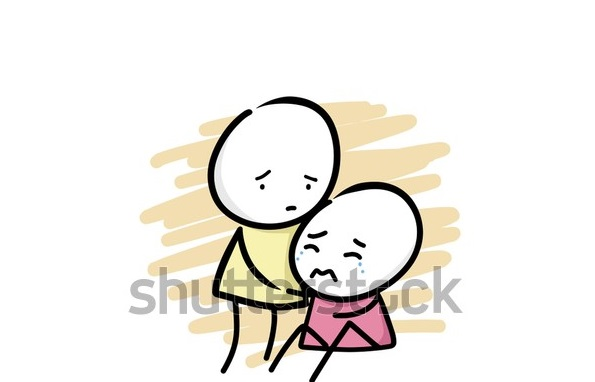
ala ghadri al zamâni على غدر الزمان 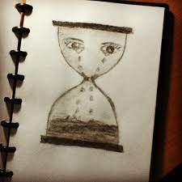
la tâlamâ لطالما
raqasat ala josas al usûd(u) رقصت على جثث الأسود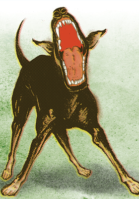
كلاب kilab(u)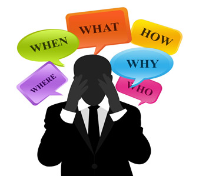
la tahsabanna لا تحسبن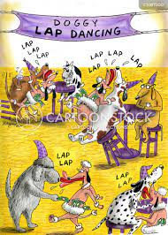
b'raqsiha برقصها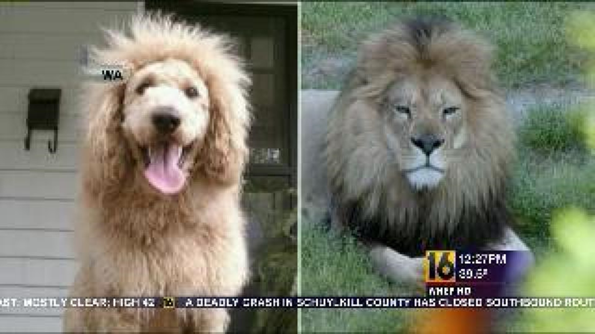
ta'lu تعلو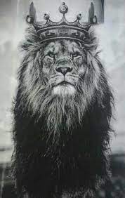
ala asyâdiha على اسيادها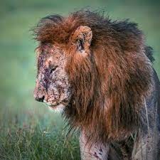
tabqâ'l usûd(u) usûdan تبقى الأسود أسوداً 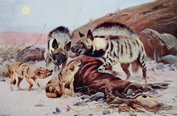
w'al kilâb(u) kilâbân و الكلاب كلابا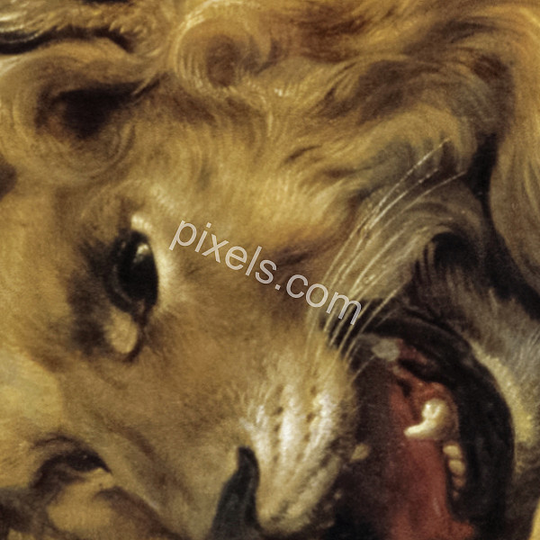
tamûtu'l asad(u) تموت الأسد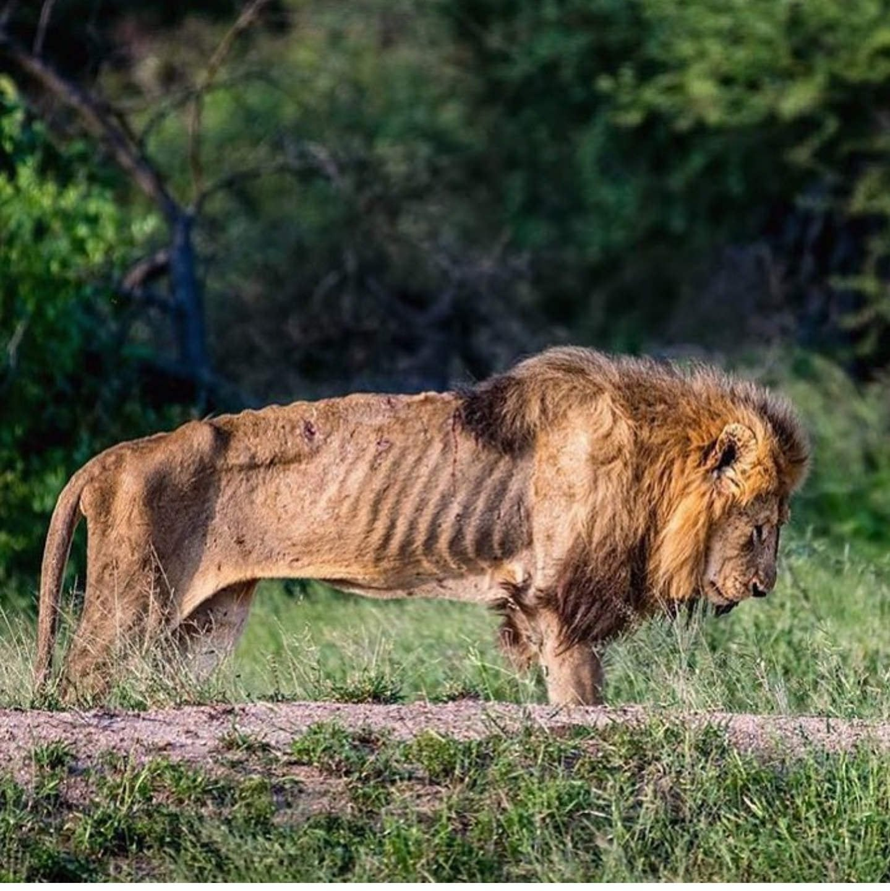
fi'l ghâbâti jaw'an في الغابات جوعاً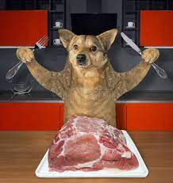
wa lahm al-da'ni و لحم الضأن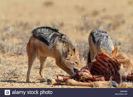
ta'kuluhu'l kilâbu تأكله الكلاب
wa zû jahlin و ذو جهل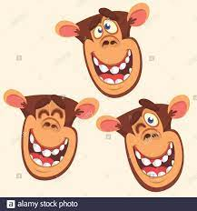
yanâmu ينام ala harîrin على حرير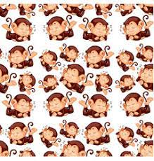
wa zû 'ilmin و ذو علم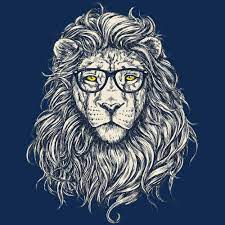
mafârishuhu al-turâbu مفارشه التراب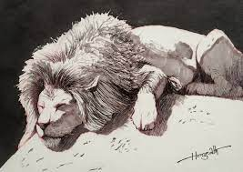
❮
❯